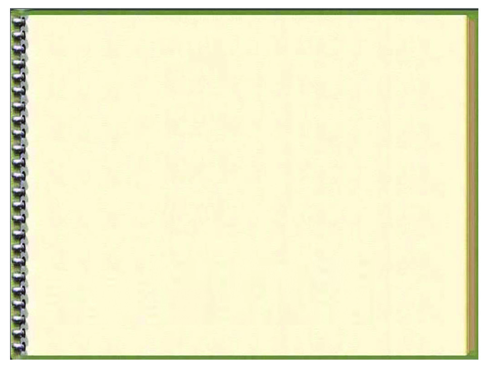
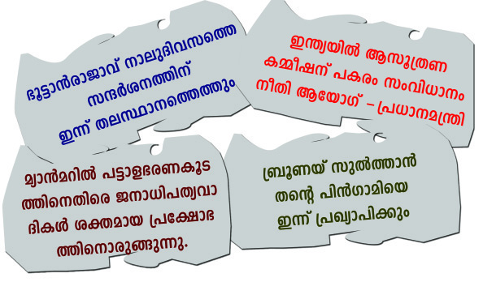
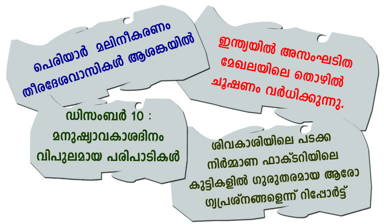
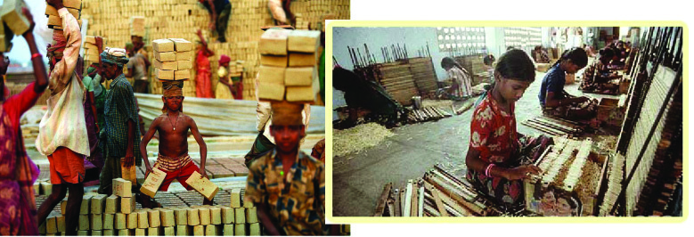
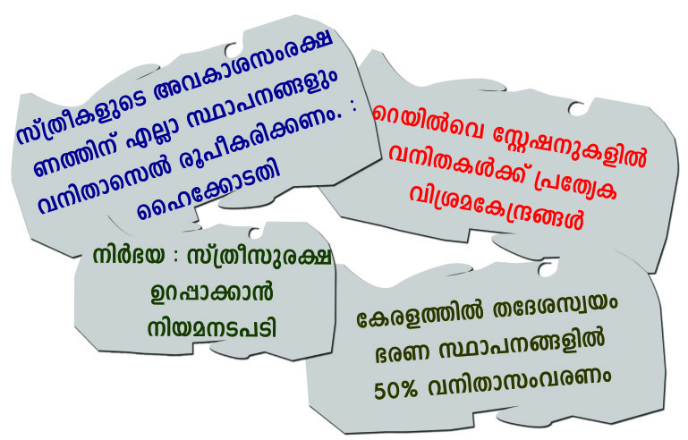
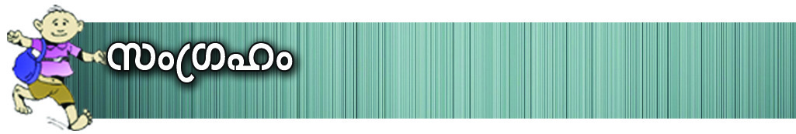
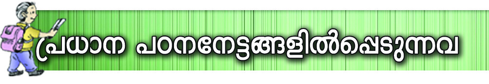
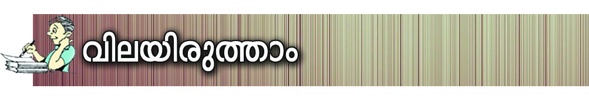
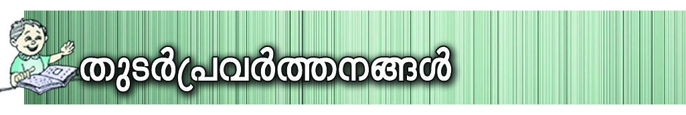

P\m-[n-]-Xyhpw Ah-Im-i-ßfpw
Z£n-Wm-{^n--°-bnse P\m-[n-]Xyhncp≤ `c-W-Iq-S-Øn-s\-Xnsc kacw
\bn® s\¬k¨ a-t≠-e-bpsS hm°p-Iƒ hmbn-®-t√m. GXpXcw
cmjv{S-Øn-\p-th-≠n-bmWv at≠e ]S-s]m-cp-Xn-b-Xv? F√m-h-scbpw Xpey-ambn
cmPysØ F√m ta¬t°m-bva-Iƒ°pw-
F-Xn-cm-bn-´m-Wv Rm≥ ]d-bp-Ibpw
{]h¿Øn-°p-Ibpw sNbvXn-´p-≈-Xv.
kzmX-{¥yhpw P\m-[n-]-Xyhpw
kl-h¿Øn-Xzhpw ka-Xz-hp-ap-≈ Hcp
cmjv{S-Øn-\p-th-≠n-bmWp Rm≥
]S-sh-´p-∂Xv.
CXp t\Sn-sb-Sp-°p-I-bm-sWs‚ e£yw......
P\m-[n-]Xyhyh-ÿ-bn¬ \nßfpw Rßfpw
Xpey-cm-hpw.
s\¬k¨ at≠e
Page 47

Page 48




kmaq-ly-imkv{Xw
144
P\m-[n-]-Xyhpw Ah-Im-i-ßfpw
Z£n-Wm-{^n-°-bnse
{Sm≥kvtImbn {Kma-
Øn¬
Itkmk
tKm{X-hn-`m-K-Øn¬ 1918
Pqembv 18 \v P\n®p. Z£n-Wm-{^n-
°-bnse \ot{Km hwi-P-cpsS Ah-
Imi kwc-£-W-Øn-\p-th≠n
t]mcm-Sn. B{^n-°≥ \mj-W¬
tIm¨{K-kns‚ ap≥\nc t]mcm-
fn-bm-bn-cp∂p At±lw. cmPy-t{Zm-
l-°p‰w NpaØn XS-hn-em-°-s∏´
At±-l-Øn\v Ccp-]-Øn-bm-dp-
h¿jhpw Ggp-am-khpw ]Øp-Zn-h-
k
h
p
w
Pbn-en¬ Ign-tb≠n h∂p. 1990
s^-{_p-hcn ]Xn-s\m-∂n\v Pbn¬
tamNn-X-\mb At±lw 1994 sabv
10 \v Z£n-Wm-{^n-°≥ {]kn-
U‚mbn. 2013 Unkw-_¿ 5˛mw
XobXn 95˛mw hb- n¬ At±lw
A¥-cn-®p.
s\¬k¨ at≠e
]cn-K-Wn-°p∂ P\m-[n-]Xyhyh-ÿ-bmWv
At±lw kz]v\w I≠-Xv. F¥mWv P\m-[n-
]Xysa∂v ap≥¢m-kn¬ a\ n-em-°n-bt√m? P\m-
[n-]Xyhncp≤ Kh¨sa‚pIƒ Fhn-sS-sbms°
\ne-\nt∂m, Ahn-sS-sbms° P\m-[n-]-Xy-{]-t£m-
`-ßfpw D≠m-bn-´p-s≠∂v Ncn{Xw \sΩ ]Tn-∏n-
°p-∂p. P\m-[n-]Xy `c-W-{I-a-Øn-\p-th≠n \S∂
ka-c-ß-fn¬ {it≤-b-amb Hcp DZm-l-cWw Xmsg
X∂n-cn-°p-∂p. IqSp-X¬ DZm-l-c-W-߃ Is≠Øn
]´nI hn]p-eo-I-cn-°p-I.
C¥ybpsS kzmX{¥y-k-acw
P\m-[n-]-Xy-hy-h-ÿbv°v henb kzoIm-cyX e`n-
°p-tºmƒ Xs∂ hnhn[ cmPy-ß-fn¬ P\m-[n-]-
tXy-Xc Kh¨sa‚pIƒ \ne-\n¬°p-∂p.
Fs¥√mw khn-ti-j-X-I-fmWv P\m-[n-]Xy
Kh¨sa‚pI-sf a‰p-≈h-bn¬ \n∂p hyXy-kvX-
am-°p-∂Xv? Fs¥ms° `c-W-{I-a-ß-fmWv
temIØv \ne-\n¬°p-∂-Xv? X∂n-cn-°p∂ hm¿ØmXe-s°-´p-Iƒ
\nco-£n-°q.
hm¿Ø-I-fn¬ \¬In-bn-cn-°p∂ cmPy-ß-sfbpw AhnsS \ne-
\n¬°p∂ Kh¨sa‚pIsfbpw \ap°v Xmsg-]-dbpw {]Imcw
{Iao-I-cn-°mw.
Page 49


Ãm≥tU¿Uv VI
145
P\m-[n-]-Xyhpw Ah-Im-i-ßfpw
cmPyw
Kh¨sa‚ns‚ cq]w
`q´m≥
`cWLS\m]camb cmPhmgvN
C¥y
P\m-[n-]Xy`cWw
{_qWbv
kp¬Øm≥ `cWw
aym≥a¿
]´m-f-`-cWw
IqSp-X¬ cmPy-ßfpw Ahn-SsØ Kh¨sa‚pIfpw Is≠Øn ]´nI
hn]p-eo-I-cn-°p-I.
ta¬ kqNn∏n® Kh¨sa‚p-Iƒ XΩn-ep≈ hyXymk߃ Fs¥-
√m-am-Wv? `q´m≥ cmPmhpw {_qWbv kp¬Øm\pw ]n¥p-S¿®m-Sn-
ÿm-\-Øn¬ A[n-Im-c-Øn¬ hcp-∂p. Ch P\m-[n-]-tXy-Xc
Kh¨sa‚p-Iƒ°v DZm-l-c-W-amWv. ]´m-f-`-c-Whpw P\m-[n-]-tXy-
Xc Kh¨sa‚p-I-fn¬s∏-Sp-∂p. Hcp hy‡ntbm H∂ne[nIw
hy‡nItfm kz¥w CjvSm-\p-k-cWw \S-Øp∂ `c-W-{I-a-amWv
P\m-[n-]-tXy-Xc `c-W-hy-h-ÿ. C¥y-bn¬ P\m-[n-]-Xy `c-W-
{I-a-amWp-≈-sX∂v \n߃°dn-bm-a-t√m. P\-{]-Xn-\n-[n-Iƒ \S-
Øp∂ `c-W-{I-asØ P\m-[n-]Xy Kh¨sa‚ v F∂p ]d-bp-
∂p. P\m-[n-]Xy Kh¨sa‚pIfpsSbpw P\m-[n-]-tXy-Xc
Kh¨sa‚pIfpsSbpw khn-ti-j-X-Iƒ ]´n-I-bn¬ \n∂p a\-
n-em-°q.
P\m-[n-]-Xy-Kh¨sa‚ v
P\m-[n-]-tXy-Xc Kh¨sa‚ v
P\-߃ Xnc-s™-Sp-°p∂
A[n-Imcw ]c-º-cm-K-X-ambn ssIam-dpItbm
P\-{]-Xn-\n-[n-I-fpsS `cWw
]nSn-s®-Sp-°p-Itbm sNøp-∂p.
P\-߃°v A`n-{]m-b-kzm-
P\-߃°v A`n-{]mbkzmX{¥yhpw Ah-Im-
X{¥yhpw Ah-Im-i-ßfpw
i-ßfpw ]cn-an-X-amWv.
\nba-]-c-ambn Dd∏p \¬Ip∂p
`c-Wm-[n-Im-cn-Ifpw \nb-a-Øn\v
`c-Wm-[n-Im-cn- \n-b-a-Øn\v AXo-X-\mWv.
hnt[-b-cmbn {]h¿Øn-°p∂p.
ImcWw Ah¿ Xocp-am-\n-°p-∂-XmWv \nbaw.
Page 50


kmaq-ly-imkv{Xw
146
P\m-[n-]-Xyhpw Ah-Im-i-ßfpw
P\m-[n-]Xy˛P\m-[n-]-tXy-Xc Kh¨sa‚p-I-fpsS khn-ti-j-X-Iƒ Xmc-
Xayw sNbvXv -Ip-dn∏v Xbm-dm-°p-I.
P\m-[n-]Xy Kh¨sa‚p-Ifp-sSbpw P\m-[n-]-tXy-Xc
Kh¨sa‚pIfp-sSbpw khn-ti-j-X-Iƒ a\- n-em-°n-b-t√m.
temIØv `qcn-`mKw cmPy-ßfpw kzoI-cn-®n-cn-°p-∂Xv P\m-[n-]Xy
`c-W-{I-a-am-Wv. a‰p≈ k{º-Zm-b-ßsf At]-£n®v AXn-\p≈
ta∑-I-fmWv CXn-\p- Im-c-Ww.
P\m-[n-]-Xy-Kh¨sa‚ns‚ ta∑-Iƒ
P\m-`n-emjw am\n-°p∂p.
hy‡n-kzm-X{¥yw kwc-£n-°p∂p.
`c-Wm-[n-Im-cn-Ifpw P\-ßfpw Htc \nba-Øn\v hnt[-b-
cmWv.
`c-Wm-[n-Im-cn-Iƒ P\-ß-tfmSv IS-s∏-´n-cn-°p∂p.
GXp-Xcw `cWcq]w \ne\n¬°p∂ cmPyØv Pohn-°m-\mWv \n߃ IqSp-
X¬ CjvS-s∏-Sp-∂-Xv? ImcWw hni-Z-am-°p-I.
P\m-[n-]Xy˛P\m-[n-]-tXy-Xc Kh¨sa‚p-Iƒ ]cn-N-b-s∏-´t√m.
Xmsg X∂n-cn-°p∂ {]kvXm-h-\-Iƒ ]cn-tim-[n®v P\m-[n-]-Xy-
hp-ambn _‘-s∏-´-hbv-°p-t\sc AS-bm-fhpw P\m-[n-]-tXy-
Xc Kh¨sa‚p-ambn _‘-s∏-´-hbv°p t\sc AS-bm-fhpw
tcJ-s∏-Sp-Øp-I.
IrXy-amb Ime-]-cn-[n-bn¬ Xnc-s™-Sp∏p \S-°p∂p.
Xe-ap-d-I-fmbn ssIam-dp∂ `c-W-{Iaw.
P\-{]-Xn--\n-[n-I-fpsS `cWw.
cmPm-hns‚/kp¬Øms‚/]´m-f-ta-[m-hn-bpsS `cWw.
hy‡n-kzm-X{¥yw \ne-\n¬°p∂p.
tImS-Xn-Iƒ°v \nb-{¥Ww.
P\m-`n-{]mbw am\n-°p-∂p.
P\m-[n-]Xy Kh¨sa‚p-Isf CXc Kh¨sa‚pI-fn¬ \n∂p
hyXy--kvX-am-°p-∂ {][m\ LS-Iw Ah Dd-∏p\-¬Ip∂ Ah-
Page 51


Ãm≥tU¿Uv VI
147
P\m-[n-]-Xyhpw Ah-Im-i-ßfpw
Im-i-ß-fm-Wv. ]uc-∑m¿°v P\m-[n-]XyPohnXw km[y-am-I-W-
sa-¶n¬ ]ucm-h-Im-i-߃ \ne-\n¬°-Ww.
P\m-[n-]-Xyc-m-Py-amb C¥y-bn¬ \ap°v e`y-amb GXm\pw Ah-
Im-i-ß-fn¬ NneXv Xmsg X∂n-cn-°p-∂p.
Pohn-°m-\p≈ Ah-Imiw
hnZym-`ym-k-Øn-\p≈ Ah-Imiw
A`n-{]mbkzmX{¥yw
kwL-S-\m-kzm-X{¥yw
Cu Ah-Im-i-߃ F√m cmPy-ß-fn-sebpw P\-߃°v e`n-°p-
∂pt≠m? P\m-[n-]-Xy-cm-Py-ß-fn¬ am{X-amWv Ah-Im-i-߃
^e-{]-Z-ambn kwc-£n-°-s∏-Sp-I. X∂n-cn-°p∂ tªmKv Ipdn∏v
hmbn°q.
_mey-Imew apX¬ bp≤-`q-an-bn¬ Pohn-t°≠h∂ ]Xn\mdp
Imcn-bmb ]ekvXo≥ s]¨Ip-´n-bpsS hm°p-I-fm-WnXv. kz]v\w
ImWm≥t]mepw km[n-°mØ hn[w bp≤w ^dm _°dns‚
F√m {]Xo-£-Ifpw XI¿Øp. CXp-t]mse kzmX{¥yw, kam-
[m-\w, Ah-Im-i-߃ F∂o ]Z-ß-fpsS A¿Y-sa-s¥-∂-dn-bmsX
[mcmfwt]¿ Cu temIØv Pohn-°p-∂p-≠v. F¥mWv Ah-Im-
iw? Hcp ]uc\v sa®-s∏´ PohnXw ssIh-cn-°p-∂Xn\pw Xs‚
tijnbpw Ignhpw hnI-kn-∏n-°p-∂-Xn\v klm-b-I-am-bXpw
kaq-lhpw cmjv{Shpw Dd-∏p-\¬Ip-∂-Xp-amb hyhÿI-fmWv
Ah-Im-i-߃.
Page 52



kmaq-ly-imkv{Xw
148
P\m-[n-]-Xyhpw Ah-Im-i-ßfpw
Ah-Im-i-kw-c-£-W-Øn\v Bh-iy-amb \S-]-Sn-Iƒ F√m cmPy-
ß-fn-sebpw Kh¨sa‚p-Iƒ kzoI-cn-°m-dp≠v. Hmtcm cmPyhpw
`c-W-L-S-\-bn-epƒs∏-SpØn ]uc\v Dd-∏p-\¬Ip∂ Ah-Im-i-
ß-fpsS ]´n-I-bmWv Ah-Imi ]{Xn-I. C¥y-bpsS Ah-Imi
]{XnI auen-Im-h-Im-i-߃ F∂ t]cn-e-dn-b-s∏-Sp-∂p.
a\p-jym-h-Im-i-߃
""F-√m a-\p-jy-cpw kz-X-{¥-cm-bn
P-\n-°p-∂p. ]-Z-hn-bn-epw A-h-
Im-i-Øn-epw Xp-ey-X ]p-e¿-Øp-
∂p. A-h¿ _p-≤n-bpw a-\x- m-
£n-bpwsIm-≠v A-\pKr-lo-X-
cpw ]-c-kv-]-ckm-tlm-Z-cyw ]p-
e¿-Øm≥ \n¿-_-‘n-X-cp-am-Wv''.
km¿h-tZ-iob a\p-jym
-h-Imi{]Jym-]\w
apI-fn¬ \¬In-bn-cn-°p∂ sImfmjv \nco-£n-°q. Ah-
Imi \ntj-[-߃°n-S-bm-°p∂ Nne kml-N-cy-ß-
fpw Ah kwc-£n-°p-∂-Xn-\p≈ {ia-ß-fp-amWv sImfm-
jn¬ {]Xn-]m-Zn-®n-cn-°p-∂-Xv. Ah-Im-i-ew-L-\-
ßfp≠mhp-tºm-gmWv Ah-Im-i-kw-c-£-W-Øn-\p-th-
≠n-bp≈ {ia-߃ D≠m-Ip-∂Xv. B[p-\n-I-Im-eØv
Ah-Im-i-ßsf s]mXpsh a\p-jym-h-Im-i-߃ F∂
\ne-°mWv hne-bn-cp-Ø-s∏-Sp-∂-Xv. a\p-jy-hw-i-Ønse
Hcp AwKw F∂ \ne-bn¬ F√m-h¿°pw Hcp-t]mse
e`y-am-bn-cn-t°≠ Ah-Im-i-ß-fmWv a\p-jym-h-Im-i-߃. 1948
Unkw-_¿ ]Øn\v \ne-hn¬h∂ km¿h-tZ-iob a\p-jy-h-
Imi{]Jym-]-\-Øn¬ Dƒs°m-≈n-®n-´p≈ Nne Ah-Im-i-߃
]cntim[n-°q.
Page 53


Ãm≥tU¿Uv VI
149
P\m-[n-]-Xyhpw Ah-Im-i-ßfpw
a\p-jym-h-Imi Zn\m-N-c-W-tØm-S-\p-_-‘n®v kvIqƒ Akw-ªn-
bn¬ Ah-X-cn-∏n-°p-∂-Xn\v a\p-jym-h-Im-i-߃ F∂ hnj-b-
Øn¬ Hcp {]kwKw Xbm-dm-°p-I.
Pohn-°m-\p≈ Ah-Imiw
kzmX-{¥y-Øn-\p≈ Ah-Imiw
kwL-S\mkzmX{¥yw
sXmgneh-Imiw
kwkvIm-chpw `mjbpw en]nbpw kwc-£n-°m-\p≈
Ah-Im-iw.
a\p-jym-h-Imikwc-£-W-Øn-\p-th≠n C¥ym
Kh¨sa‚ v tZio-b-X-e-Ønepw kwÿm-\-X-e-Ønepw \nc-
h[n \S-]-Sn-Iƒ ssIs°m-≠n-´p-≠v. Ah-bn¬ {][m-\-s∏-
´-XmWv tZiob a\p-jym-h-Imi IΩo-j-s‚bpw kwÿm\
a\p-jym-h-Imi IΩo-j-\p-I-fpsSbpw cq]o-I-c-Ww.
Pohn-°m-\p≈ Ah-Imiw
F∂m¬ A¥-t m-sS-bp≈
PohnXw F∂m-W¿Y-am-°p-∂-Xv.
ip≤-hmbp, ip≤-P-ew, aXn-
bmb t]mj-Im-lmcw F∂nh-
sbms° Pohn-°m-\p-≈ Ah-
Im-i-Øns‚ `mK-am-Wv.
tZiob a\p-jym-h-Imi IΩo-j≥
a\pjymh-Imikwc-£-W-Øn-\p-th≠n tZiobXe-Øn¬
ssIs°m≠ {][m\ \S-]-Sn-bmWv tZiob a\p-jym-h-Imi IΩo-
js‚ cq]o-I-c-Ww. 1993 ¬ ]m¿e-sa‚ v ]mkm-°nb a\p-jym-h-
Imikwc-£W \nb-a-a-\p-k-cn®mWv IΩo-j\v cq]w \¬In-bXv.
tZiob a\p-jym-h-Imi IΩo-j-\n¬ sNb¿am-\pƒs∏sS A©w-
K-߃ D≠m-Ipw. dn´-b¿ sNbvX Hcp kp{]ow-tIm-SXn No^v PÃn-
km-bn-cn°pw IΩo-js‚ sNb¿am≥.
PÃnkv cwK-\mY an{i
a\p-jym-h-Imi
IΩo-js‚
BZy-sN-b¿am≥
a\p-jym-h-ImiewL-\-hp-ambn _‘-s∏´ ]cm-Xn-I-fn-
t∑¬ At\z-jWw \S-Øp-I.
Pbn-ep-Ifpw a‰pw kμ¿in®v At¥-hm-kn-I-fpsS Pohn-
X-ku-Icyw ]Tn®v ip]m¿iIƒ \¬IpI.
a\p--jym-h-Imikwc-£-W-Øn\v ^e-{]-Z-amb \n¿tZ-i-
߃ \¬Ip-I.
a\p-jym-h-ImicwKØp {]h¿Øn-°p∂ k∂-≤-kw-L-
S-\-Isf ]cn-t]m-jn-∏n-°p-I.
tZiob a\p-jym-h-Imi IΩo-js‚ Npa-X-e-Iƒ
Page 54

kmaq-ly-imkv{Xw
150
P\m-[n-]-Xyhpw Ah-Im-i-ßfpw
Ip´n-I-fpsS GXm\pw Ah-Im-i-ß-fmWv apI-fn¬
\¬In-bn-cn-°p-∂-Xv. F¥p-sIm-≠mWv Ip´n-Iƒ°v
khn-ti-j-amb Ah-Im-i-߃ Bh-iy-am-Ip-∂Xv?
Fs¥m-s°-bm-Wv Ip´n-I-fpsS Ah-Im-i-߃?
_mey-Øns‚ imco-cn-Ihpw am\-kn-I-hp-amb
Ahÿ Ip´n-I-sf khn-tij ]cn-K-W\ A¿ln-
°p-∂-h-cm-°p-∂p. AXn-\m¬ Ip´n-I-fpsS Ah-Imi
kwc-£Ww hfsc {][m-\-am-Wv.
hnZym-`ymkw Ip´n-I-fpsS {][m\ Ah-Im-i-am-Wv. 2009 ¬ ]m¿e-
sa‚ v ]mkm-°nb hnZym-`ymk Ah-Imi\nbaw (B¿.-‰n.C
BIvSv) CXv FSpØp ]d-bp-∂p. 6 apX¬ 14 hb- p-hsc {]mb-
kwÿm\ a\p-jym-h-Imi IΩo-j≥
F√m kwÿm-\-ß-fnepw kwÿm\ a\p-jym-h-Imi IΩo-
j\pIƒ°v cq]w-\¬In-bn-´p-≠v. 1998 ¬ tIcf kwÿm\ a\p-
jym-h-Imi IΩo-j≥ \ne-hn¬h∂p. Hcp sNb¿am\pw c≠w-K-
ßfpw AS-ßn-b-Xm-Wv kwÿm\ a\p-jym-h-Imi IΩo-j≥.
tZiob a\p-jymhImi IΩo-j-\n¬ \n£n-]vX-am-bn-cn-°p∂ Npa-
X-e-Iƒ Xs∂-bmWv kwÿm\ a\p-jym-h-Imi IΩo-j\pap≈-
Xv. a\p-jym-h-Im-i-߃ \ntj-[n-°-s∏-´m¬ a\p-jym-h-Imi IΩo-
js\ kao-]n-°m-hp-∂-Xm-Wv.
Ip´n-I-fpsS Ah-Im-i-߃
Page 55





Ãm≥tU¿Uv VI
151
P\m-[n-]-Xyhpw Ah-Im-i-ßfpw
ap≈ Ip´n-Iƒ°v kuP-\yhpw \n¿_-‘n-X-hp-amb hnZym-`ymkw
CXv Dd-∏m-°p-∂p. ]T-\m-\p-Iqe A¥-co-£hpw ASn-ÿm\kuI-
cy-ßfpw Ip´n-I-fpsS Ah-Im-i-am-Wv.
]Tn-°m-\p≈ Ah-Imiw Ip´n-bpsS Ah-Im-i-am-sW∂v a\- n-
em--bt√m. IqSp-X¬ Ah-Im-i-߃ FgpXn ]´nI ]q¿Øn-bm-°q.
AXn-Po-h-\-Øn\pw kwc-£-W-Øn\pw ]q¿W-hn-Im-k-Øn-
\p-ap≈ Ah-Imiw.
am\-kn-Ihpw imco-cn-I-hp-amb ]oU-\-ß-fn¬ \n∂p kwc-
£-W-Øn\pw ]cn-N-c-W-Øn-\p-ap≈ Ah-Im-iw.
Ip´n-I-fpsS Ah-Imi{]Jym-]\w \ne-\n¬°p-
tºmƒXs∂ Ah¿ hnhn[ Xc-Øn-ep≈ Nqj-W-
߃°v hnt[-b-cm-Ip-∂p-≠v.
Ip´n-I-fpsS Ah-Im-i-߃ kwc-£n-°p-∂-Xn\v
tZio-b-X-e-Ønepw kwÿm-\-X-e-Ønepw [mcmfw
\S-]-Sn-Iƒ ssIs°m-≠n-´p-≠v. CXn¬ {][m-\-s∏-
´-XmWv tZiob _mem-h-Imi IΩo-j-s‚bpw
kwÿm\ _mem-h-Imi IΩo-j\p-I-fpsSbpw cq]o-
I-c-Ww.
2014 ¬ aem-e-tbm-
sSm∏w kam-[m-\-
Øn-\p≈ t\m_¬
kΩm\w e`n®p.
_Nv]≥ _®mthm
Btμm-f≥ F∂
kwL-S\ cq]o-I-cn®v _me-th-
e-bvs°-Xnsc {]h¿Øn-°p-∂p.
ssIemkv kXym¿Yn
Page 56




kmaq-ly-imkv{Xw
152
P\m-[n-]-Xyhpw Ah-Im-i-ßfpw
Ip´n-I-fpsS Ah-Im-i-߃ l\n-°-s∏-´m¬ _mem-
h-Imi IΩo-js\ kao-]n-°m\pw ]cm-Xn-s∏-Sm\pw
Ah-Im-i-ap-≠v.
apI-fn¬ sImSpØ hm¿Ø-Iƒ t\m°q. kv{XoIfpsS Ah-Im-i-
kw-c-£-W-hp-ambn _‘-s∏´ Nne \S-]-Sn-I-fmWv ChnsS kqNn-
∏n-°p-∂-Xv. kv{XoIƒs°-Xn-cmb hnth-N\w Ah-km-\n-∏n-°p-∂-
Xn\pw AhcpsS D∂-a-\Øn\p-ambn 1979 ¬ kv{Xohnth-N\
D∑qe\ DS-ºSn sFIy-cm-jv{S-k` AwKo-I-cn-°p-I-bp-≠m-bn.
Fs¥√mw {]tXyI Ah-Im-i-ß-fmWv kv{XoIƒ°p-≈Xv? Nm¿´v
]cn-tim-[n°q.
s]¨Ip-´n-I-fpsS
hnZym-`ym-k-Øn-\p-
th≠n t]mcm-Sn-b-
Xn\v ]Xn-t\gmwhb-
n¬ kam-[m-\-Øn-
\p≈ t\m_¬ kΩm\w e`n-®p.
aeme bqk^v kmbn
kv{XoI-fpsS Ah-Im-i-߃
Page 57


Ãm≥tU¿Uv VI
153
P\m-[n-]-Xyhpw Ah-Im-i-ßfpw
F√m \ne-bnepw ]pcp-j\p Xpey-amb ]cn-K-W\ kv{XobpsS
Ah-Im-i-am-Wv. kv{XoI-fpsS Ah-Im-i-kw-c-£-W-Øn-\mbn tZio-
b-X-e-Øn¬ tZiob h\nXmIΩo-j\pw kwÿm-\-X-e-Øn¬
kwÿm\ h\nXmIΩo-j\pIfpw {]h¿Øn-°p-∂p.
kv{XoIƒs°-Xn-cmb AXn-{I-a-߃, Ah-Im-i-\n-tj-[-߃ F∂n-
h-bp-ambn _‘-s∏´ ]cm-Xn-Iƒ IΩo-j\v ka¿∏n-°m-hp-∂-Xm-Wv.
]cm-Xn-Iƒ At\z-jn®v Bh-iy-amb \S-]-Sn-Iƒ IΩo-j≥
ssIs°m-≈p-∂-Xm-Wv.
kv{XoI-fpsS Ah-Imikwc£W-hp-ambn _‘-s∏´ hm¿Ø-Ifpw Nn{X-
ßfpw tiJ-cn®v sImfmjv Xbm-dm-°p-I.
Ah-Im-i-ßfpw IS-a-Ifpw
Ah-Im-i-߃ am{X-amtWm \ap-°p-≈Xv? Hmtcm Ah-Im-i-
Øn\pw A\p-kr-X-ambn IS-a-Ifpw \ap-°p-≠v. Nm¿´v \nco-£n°q.
Page 58


kmaq-ly-imkv{Xw
154
P\m-[n-]-Xyhpw Ah-Im-i-ßfpw
kzmX{¥yw Fs‚ Ah-Imiw.
Rm≥ A\p-`-hn-°p∂ kzmX{¥yw
a‰p-≈-h¿°pw \¬IpI Fs‚ ISa-
bmWv.
Ip´n-sb∂ \ne-bn¬ kwc-£Ww
Fs∂ kwc-£n-°pI amXm-]n-Xm-
Fs‚ Ah-Im-i-amWv.
°-fpsS IS-a-bm-Wv.
hm¿[Iy-Øn¬ kwc-£Ww
hm¿[Iy-Øn¬ amXm-]n-Xm-°-
amXm-]n-Xm-°-fpsS Ah-Im-i-amW.v
sf kwc-£n-°pI Fs‚ IS-a-bmW.v
hnZym-`ym-khpw AXn-\p≈ ASn
kvIqƒ \nb-a-߃ A\p
-ÿm-\-ku-I-cyhpw Fs‚
kcn-°pI Fs‚ IS-a-bm-Wv.
Ah-Im-i-amWv.
Ah-Im-i-߃ \ntj-[n-°-s∏-´m¬
cmjv{S-tk-h-\hpw kaq-l-tk-h\
AXv ]cn-l-cn®v In´m≥ F\n°v
hpw Fs‚ IS-a-bm-Wv.
Ah-Im-i-ap-≠v.
GXm\pw Ah-Im-i-ßfpw AXn-\-\p-kr-X-amb Nne IS-a-I-fp-amWv
apI-fn¬ \¬In-bn-cn-°p-∂-Xv. IS-a-I-fn-√msX Ah-Im-i-߃ \ne-
\n¬°p-I-bn-√.
Ah-Im-i-ßfpw IS-a-Ifpw XΩn-ep≈ ]c-kv]-c-_‘w hne-bn-cp-ØpI.
Ah-Im-i-߃
IS-a-Iƒ
Kh¨sa‚ v
Ah-Im-i-߃
P\m-[n-]Xy Kh¨sa‚ v
Ah-Im-i-߃ ]cn-an-X-amWv
Ip´n-I-fpsS Ah-Im-i-߃
P\m-[n-]-tXy-X-c Kh¨sa‚ v
a\p-jym-h-Im-i-߃
kv{XoI-fpsS Ah-Im-i-߃
Ah-Im-i-߃ kwc-£n-°p∂p
Page 59




Ãm≥tU¿Uv VI
155
P\m-[n-]-Xyhpw Ah-Im-i-ßfpw
Kh¨sa‚p-Isf P\m-[n-]Xy Kh¨sas‚∂pw P\m-[n-]-
tXy-Xc Kh¨sas‚∂pw Xcw-Xn-cn-°mw.
P\m-[n-]Xy Kh¨sa‚p-Isf CXc `c-W-{I-a-ß-fn¬ \n∂p
hyXy-kvX-am-°p-∂ {][m\ LSIw Ah Dd-∏p-\¬Ip∂
Ah-Im-i-ß-fm-Wv.
`cWLS-\-bn-epƒs∏-SpØn P\-߃°v Dd-∏p-\¬Ip∂
Ah-Im-i-ß-fpsS ]´n-I-bmWv Ah-Im-i-]{Xn-I.
B[p-\n-IIm-eØv Ah-Im-i-߃ s]mXpsh a\p-jym-h-
Im-i-߃ F∂ \ne-bn-emWv IW-°m-°p-∂-Xv.
Ip´n-I-fpsS Ah-Im-i-߃, kv{XoI-fpsS Ah-Im-i-߃ XpS-
ßn-b-hbv°v a\p-jym-h-Im-i-ß-tfm-sSm∏w {]tXyI ]cn-K-
W\ \¬In-bn-cn-°p-∂p.
Ah-Im-i-ß-tfm-sSm∏w \ap°v IS-a-Ifpap≠v.
P\m-[n-]Xy˛P\m-[n-]-tXy-Xc Kh¨sa‚p-Iƒ XΩn-ep≈
hyXymkw hni-Z-am-°p-∂p.
P\m-[n-]Xy Kh¨sa‚ns‚ ta∑-Iƒ ]´n-I-s∏-Sp-Øp-∂p.
P\m-[n-]-Xy-K-h¨sa‚pw Ah-Im-i-ßfpw XΩn-ep≈ ]c-
kv]-c-_‘w {]kvXm-hn-°p-∂p.
AhIm-i-]-{XnI hni-Z-am-°p-∂p.
Ah-Im-i-kw-c-£-W-Øn\v tZio-b-X-e-Øn¬ ssIs°m-≠n-
´p≈ \S-]-Sn-Iƒ hne-bn-cp-Øp-∂p.
Ah-Im-i-ßfpw IS-a-Ifpw XΩn-ep≈ ]c-kv]c_‘w hni-
I-e\w sNøp-∂p.
P\m-[n-]Xy Kh¨sa‚p-I-fp-sSbpw P\m-[n-]-tXy-Xc
Kh¨sa‚p-I-fpsSbpw khn-ti-j-X-Iƒ Xmc-Xayw sNøpI.
P\m-[n-]Xy Kh¨sa‚p-I-fpsS ta∑-Iƒ Fs¥√mw?
Page 60



kmaq-ly-imkv{Xw
156
P\m-[n-]-Xyhpw Ah-Im-i-ßfpw
]q¿W-ambn
`mKn-I-ambn
Xosc-bn√
P\m-[n-]Xy˛P\m-[n-]-tXy-Xc Kh¨sa‚p-
I-fpsS khn-ti-j-X-Iƒ Xmc-Xayw sNøm≥
Ignbpw.
P\m-[n-]Xy Kh¨sa‚p-I-fpsS ta∑-Iƒ
{]kvXm-hn-°m≥ km[n°pw
P\m-[n-]Xy Kh¨sa‚pw Ah-Im-i-ßfpw
XΩn-ep≈ ]c-kv]c_‘w hne-bn-cp-Øm≥
km[n°pw.
Ah-Im-i-]-{Xn-Isb \n¿h-Nn-°m≥ Ignbpw.
a\p-jymh-Im-i-kw-c-£-W-Øn\v tZio-b-X-
e-Ønepw kwÿm-\-X-e-Ønepw ssIs°m-
≠n-´p≈ \S-]-Sn-Iƒ hni-Z-am-°m≥
km[n°pw.
Ah-Im-i-ßfpw IS-a-Ifpw XΩn-ep≈
]c-kv]c_‘w hy‡am-°m≥ Ignbpw.
kzbw hne-bn-cpØmw
kzbw hne-bn-cpØmw
kzbw hne-bn-cpØmw
kzbw hne-bn-cpØmw
kzbw hne-bn-cpØmw
a\p-jym-h-Im-i-߃ F∂m¬ F¥v? a\p-jym-h-Im-iß-
fpsS kwc-£-W-Øn\v ssIs°m-≠n-´p≈ {][m\ \-S-]-Sn-
Iƒ Fs¥√mw?
Ah-Im-ihpw IS-abpw XΩn-ep≈ _‘w hy‡-am-°p-I.
a\p-jym-h-ImiewL-\-hp-ambn _‘-s∏´ hm¿Ø-Ifpw
Nn{X-ßfpw tiJ-cn®v B¬_w Xbm-dm-°pI.
\n߃ A\p-`-hn-°p∂ Ah-Im-i-߃ ]´n-I-s∏-SpØn
AXp-ambn _‘-s∏´ IS-a-Iƒ Fgp-Xp-I.
P\m-[n-]-tXy-Xc Kh¨sa‚p-Iƒ \ne-\n¬°p∂ IqSp-X¬
cmPy-߃ Is≠Øn ]´n-I-s∏-Sp-Øp-I.